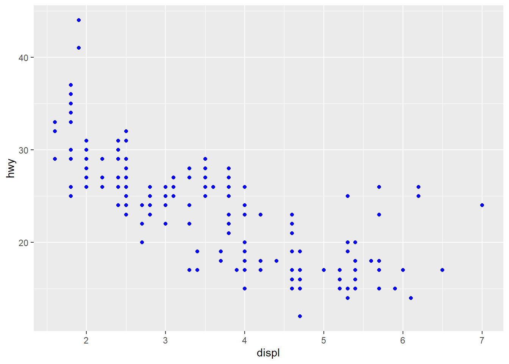
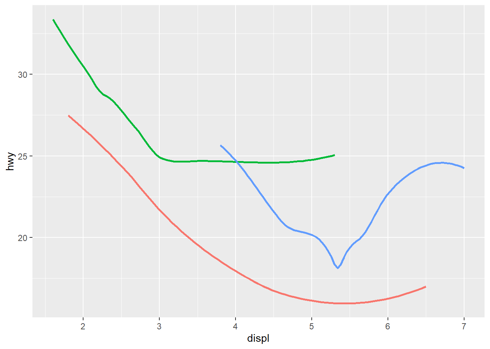
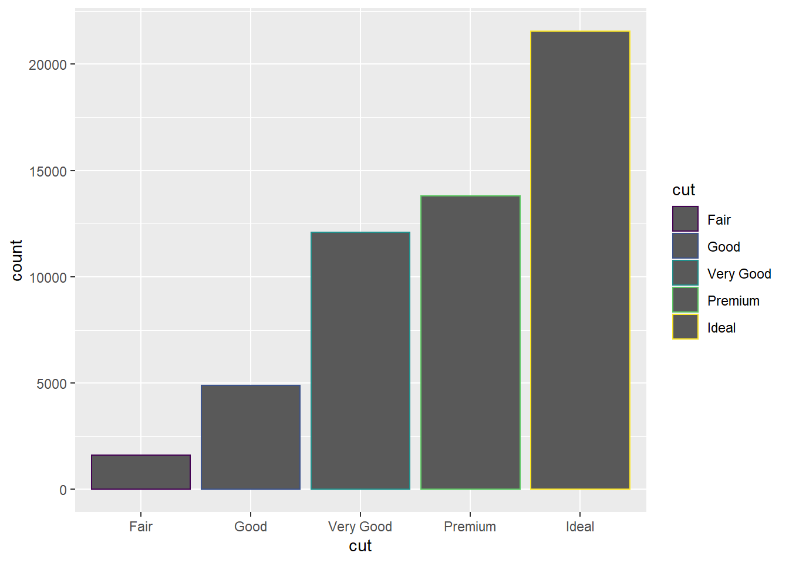
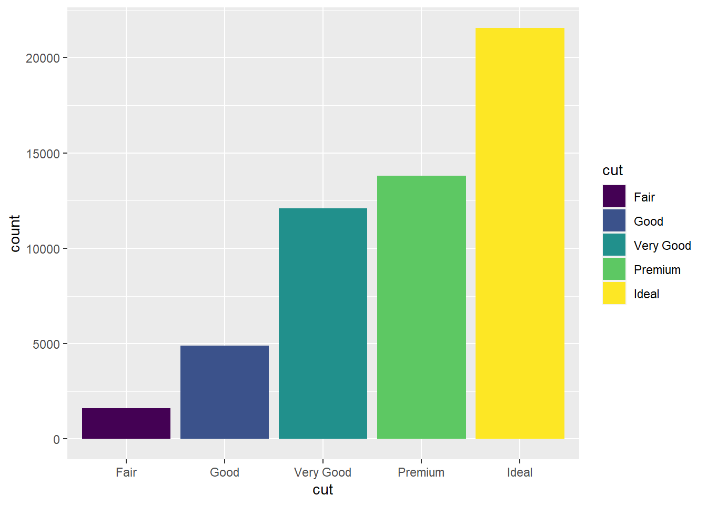
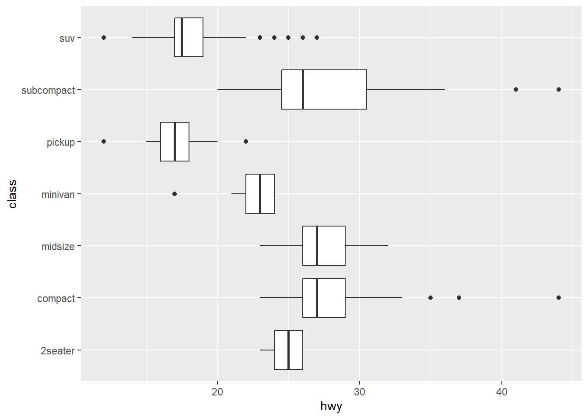
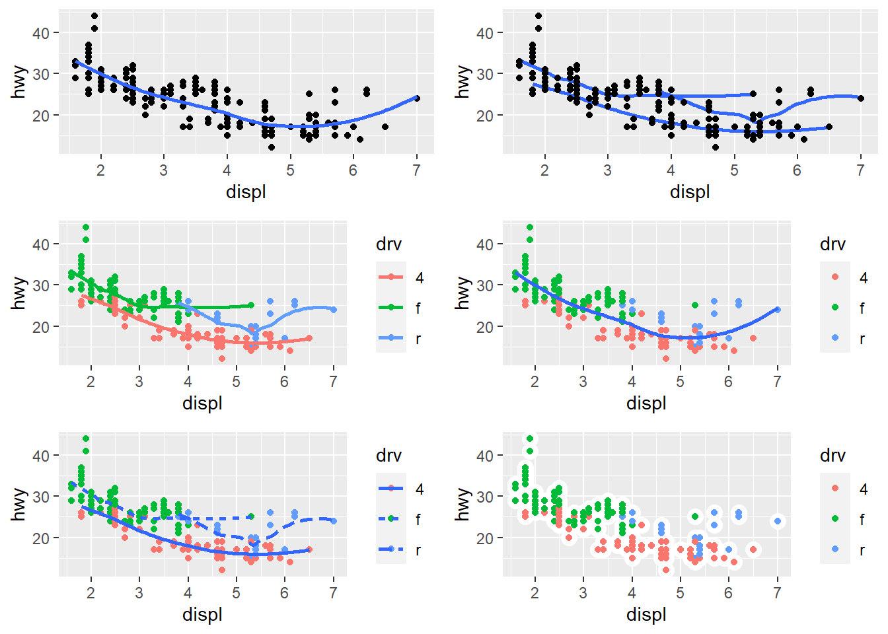
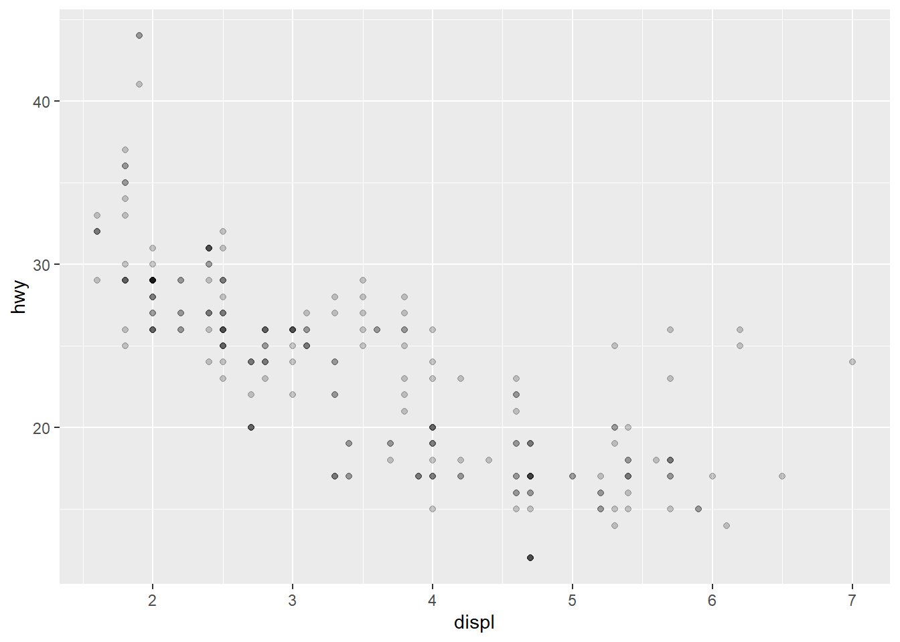

Chapter 4 3 Data visualisation
library(tidyverse) # 方便使用其中的 ggplot24.1 初识 ggplot
view(mpg) # 使用 view() 函数可以方便观察对应数据集
head(mpg) # 可以在控制台打印数据集头部信息（前十行）
#> # A tibble: 6 x 11
#> manufacturer model displ year cyl trans drv cty hwy fl class
#> <chr> <chr> <dbl> <int> <int> <chr> <chr> <int> <int> <chr> <chr>
#> 1 audi a4 1.8 1999 4 auto(l5) f 18 29 p compa~
#> 2 audi a4 1.8 1999 4 manual(m5) f 21 29 p compa~
#> 3 audi a4 2 2008 4 manual(m6) f 20 31 p compa~
#> 4 audi a4 2 2008 4 auto(av) f 21 30 p compa~
#> 5 audi a4 2.8 1999 6 auto(l5) f 16 26 p compa~
#> 6 audi a4 2.8 1999 6 manual(m5) f 18 26 p compa~列 displ：汽车的发动机尺寸，以升为单位。 列 hwy：汽车在高速公路上的燃油效率，以英里 / 加仑（mpg）为单位
ggplot(data = mpg) + # 统一设置想要处理的数据集
# 绘制 point，mapping 属性用来设置相关的 x 轴和 y 轴参数
geom_point(mapping = aes(x = displ, y = hwy))
4.2 美学映射
使用颜色映射：
ggplot(data = mpg) +
geom_point(mapping = aes(x = displ, y = hwy, color = class))
使用大小映射（不建议）：
ggplot(data = mpg) +
geom_point(mapping = aes(x = displ, y = hwy, size = class))
#> Warning: Using size for a discrete variable is not advised.
使用形状映射（注意最多只支持 6 种）：
ggplot(data = mpg) +
geom_point(mapping = aes(x = displ, y = hwy, shape = class))
#> Warning: The shape palette can deal with a maximum of 6 discrete values because
#> more than 6 becomes difficult to discriminate; you have 7. Consider
#> specifying shapes manually if you must have them.
#> Warning: Removed 62 rows containing missing values (geom_point).
使用透明度映射（不建议）：
ggplot(data = mpg) +
geom_point(mapping = aes(x = displ, y = hwy, alpha = class))
#> Warning: Using alpha for a discrete variable is not advised.
4.3 修改样式
例如颜色：
ggplot(data = mpg) +
geom_point(mapping = aes(x = displ, y = hwy), color = "blue")
支持参数：color，shape，fill，stroke（点的粗细），linetype 等。同时，样式参数支持变量。注意 shape 填写时是填写数字，有 21 种。

R 有 25 个内置形状，这些形状由数字标识。有一些看似重复的：例如，0、15 和 22 都是正方形。不同之处在于“颜色”和“填充”美学的相互作用。空心形状（0–14）具有由“颜色”确定的边框;固体形状（15–20）填充有“颜色”;填充的形状（21–24）具有“颜色”边框，并用“填充”填充填充。
4.4 多组画图
简单分组（分片）：
ggplot(data = mpg) +
geom_point(mapping = aes(x = displ, y = hwy)) +
facet_wrap(~class, nrow = 3) # 以 class 分类，三列，不限制行-1.png)
自定义条件分组：
ggplot(data = mpg) +
geom_point(mapping = aes(x = displ, y = hwy)) +
facet_grid(drv ~ cyl) # 以 drv 为 x 轴，cyl 为 y 轴-1.png)
4.5 叠加与参数
mapping 为默认接收内容，可以省略：
ggplot(data = mpg) +
geom_point(aes(x = displ, y = hwy)) +
geom_smooth(aes(x = displ, y = hwy))
#> `geom_smooth()` using method = 'loess' and formula 'y ~ x'
其中 mapping 写在基本配置项中，方便绘图自动调用
ggplot(data = mpg, mapping = aes(x = displ, y = hwy)) +
geom_point() +
geom_smooth()
#> `geom_smooth()` using method = 'loess' and formula 'y ~ x'
绘图时使用自定义 data 覆盖默认 data 配置（filter 为筛选数据）：
ggplot(data = mpg, mapping = aes(x = displ, y = hwy)) +
geom_point(color = "blue") +
geom_smooth(data = filter(mpg, class == "subcompact"))
#> `geom_smooth()` using method = 'loess' and formula 'y ~ x'
4.6 其他常见图
4.6.1 回归曲线图
回归曲线有它专门的配置项，其中 show legend 用于控制现实图例显示与否，se 控制自信指数（半透明带）显示与否：
ggplot(data = mpg) +
geom_smooth(
mapping = aes(x = displ, y = hwy, color = drv),
show.legend = FALSE,
se = FALSE
)
#> `geom_smooth()` using method = 'loess' and formula 'y ~ x'
4.6.2 条形图
ggplot(data = diamonds) +
geom_bar(mapping = aes(x = cut, colour = cut)) # colour 为描边颜色
ggplot(data = diamonds) +
geom_bar(mapping = aes(x = cut, fill = cut)) # fill 为填充颜色
但如果 fill 使用的是其他变量，会导致不同数据重叠遮挡
ggplot(data = diamonds) +
geom_bar(mapping = aes(x = cut, fill = clarity))-1.png)
解决方案 1：降低透明度
ggplot(data = diamonds, mapping = aes(x = cut, fill = clarity)) +
geom_bar(alpha = 1 / 5, position = "identity")%20with%20alpha-1.png)
解决方案 2：直接改为 colour 样式，并将 fill 设置为 NA
ggplot(data = diamonds, mapping = aes(x = cut, colour = clarity)) +
geom_bar(fill = NA, position = "identity")%20with%20color-1.png)
解决方案 3：position 改用 fill 为频率图（方便观察比例）
ggplot(data = diamonds, mapping = aes(x = cut, fill = clarity)) +
geom_bar(position = "fill")%20with%20position%20fill-1.png)
解决方案 4：position 改用 dodge 为分柱图
ggplot(data = diamonds, mapping = aes(x = cut, fill = clarity)) +
geom_bar(position = "dodge")%20with%20position%20dodge-1.png)
4.7 坐标系相关
对调坐标轴：
ggplot(data = mpg, mapping = aes(x = class, y = hwy)) +
geom_boxplot() +
coord_flip()
根据相关图像限制图形的纵横比例：
nz <- map_data("nz") # 从 map_data 里调用某国的地图
ggplot(nz, aes(long, lat, group = group)) +
geom_polygon(fill = "white", colour = "black") +
coord_quickmap() # 这里会使图表以正确的横纵比显示，防止图像拉伸扭曲-1.png)
极坐标化：
bar <- ggplot(data = diamonds) +
geom_bar(
mapping = aes(x = cut, fill = cut),
show.legend = FALSE,
width = 1
) +
theme(aspect.ratio = 1) +
labs(x = NULL, y = NULL) +
coord_polar() # 设置为极坐标（有点像圆饼图）4.8 绘制 diamonds 数据分析图
原题目：Recreate the R code necessary to generate the following graphs.
建立列表，绘制好 6 张图并装配进去：
p <- list()
p[[1]] <- ggplot(mpg, aes(x = displ, y = hwy)) +
geom_point() +
geom_smooth(se = FALSE) # 注意包含回归曲线
p[[2]] <- ggplot(mpg, aes(x = displ, y = hwy)) +
geom_smooth(mapping = aes(group = drv), se = FALSE) + # 以 drv 分组作出多条回归线
geom_point()
p[[3]] <- ggplot(mpg, aes(x = displ, y = hwy, colour = drv)) + # 全局以 drv 分类添加着色
geom_point() +
geom_smooth(se = FALSE)
p[[4]] <- ggplot(mpg, aes(x = displ, y = hwy)) +
geom_point(aes(colour = drv)) +
geom_smooth(se = FALSE) # 如果只要总的回归线，就不要把 colour 变量对 smooth 进行应用
p[[5]] <- ggplot(mpg, aes(x = displ, y = hwy)) +
geom_point(aes(colour = drv)) +
geom_smooth(aes(linetype = drv), se = FALSE) # 与以颜色分组类似，这里只是改用线条样式
p[[6]] <- ggplot(mpg, aes(x = displ, y = hwy)) +
geom_point(size = 4, color = "white") +
geom_point(aes(colour = drv)) # 这里是两幅非常相似的图重叠的效果。注意后画的图优先显示随即使用布局逐张展示：
library(grid) # 引用一下布局包
grid.newpage() # 新建布局包
pushViewport(viewport(layout = grid.layout(3, 2))) # 设置 2x3 布局
print(p[[1]], vp = viewport(layout.pos.row = 1, layout.pos.col = 1))
#> `geom_smooth()` using method = 'loess' and formula 'y ~ x'
print(p[[2]], vp = viewport(layout.pos.row = 1, layout.pos.col = 2))
#> `geom_smooth()` using method = 'loess' and formula 'y ~ x'
print(p[[3]], vp = viewport(layout.pos.row = 2, layout.pos.col = 1))
#> `geom_smooth()` using method = 'loess' and formula 'y ~ x'
print(p[[4]], vp = viewport(layout.pos.row = 2, layout.pos.col = 2))
#> `geom_smooth()` using method = 'loess' and formula 'y ~ x'
print(p[[5]], vp = viewport(layout.pos.row = 3, layout.pos.col = 1))
#> `geom_smooth()` using method = 'loess' and formula 'y ~ x'
print(p[[6]], vp = viewport(layout.pos.row = 3, layout.pos.col = 2))
4.9 研究 mpgcars 数据集
仔细观察数据集会发现 displ 和 hwy 是经过四舍五入的，在实际图表上很多点会产生重叠：
ggplot(data = mpg, mapping = aes(x = displ, y = hwy)) +
geom_point(alpha = 1 / 5)
对 position 添加 jitter 值可以手动添加 “数据噪点”，从而更好地看到数据全貌（尽管会改变数值导致图表不那么准确）：
ggplot(data = mpg) +
geom_point(mapping = aes(x = displ, y = hwy), position = "jitter")%20with%20position%20jitter-1.png)